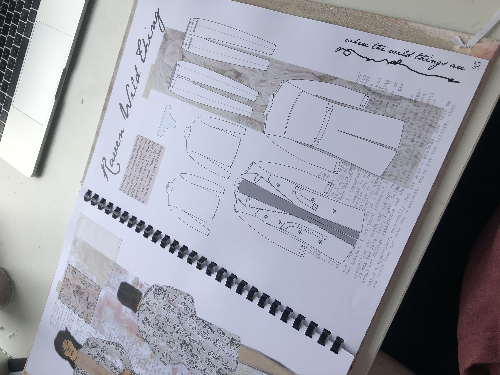
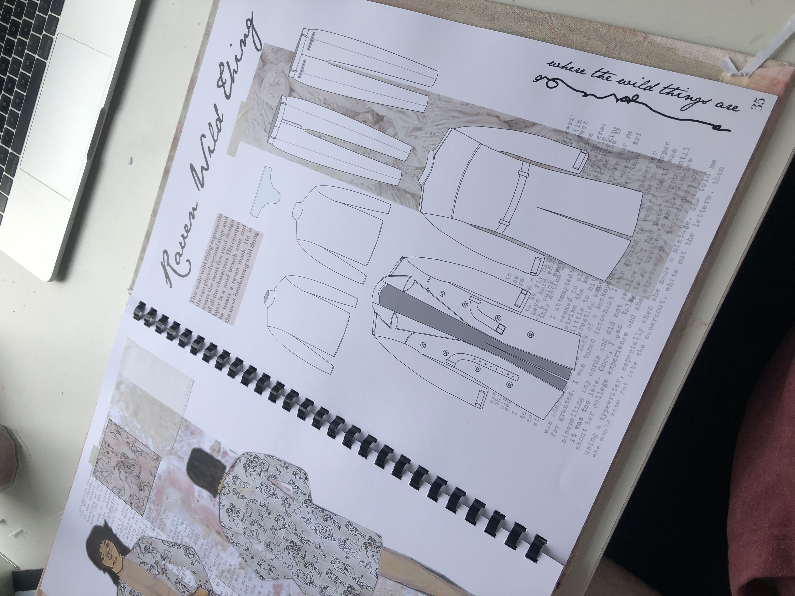

Maisie Barlow
⋅ Costumier ⋅
Maisie Barlow
⋅ Costumier ⋅
 

Where the wild things are: an adult adaptation
This book written by Maurice Sendak Was given to us as a project and I decided to take it and completely flip it on its head. I set it in the 1960s to reflect the era in which the book was written and I coined the idea that the wild things were a portrait of the wild hidden desires within people and their inner egos. The wild things that Max, the main character, meets are from the deep recesses of his unconscious, each one representing one of Freud’s psychosexual stages and wearing different woodland animal masks to keep an obscured identity and represent their animalistic behaviour. They show Max the drastic side of the spectrum of being open and alive with his Id.
I wanted to include nudity to achieve the shock factor whilst not actually making the characters naked. The completely translucent 1960s garments worn by the wild things show that they are unabashed by their uncovered bodies
I designed all of the characters and conceptualised the set design to be site specific in a forest. I made the female wild thing with the knitted underwear, sheer dress, free machine embroidered cape and vinyl headpiece.
The fabric patterns were all hand drawn by me and then printed onto fabric and embroidered over. I loved how I was able to create layers of textures and hidden shadows within the piece.